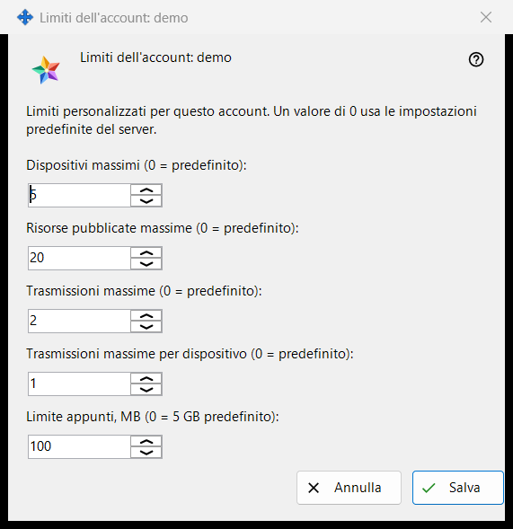
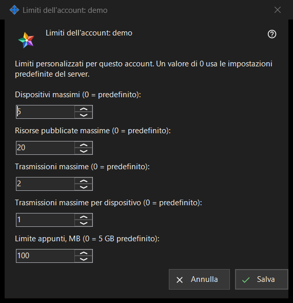

Limiti dell'account
Scopo
Imposta limiti individuali per un account del Media Exchange Server che gestisci; un valore lasciato a 0 segue l'impostazione predefinita del server. Si apre dal pulsante «Limiti..» sotto l'elenco degli account nella pagina Media Exchange Server delle impostazioni di Share Manager, che compare quando è selezionato un account. Il titolo indica l'account: «Limiti dell'account: <login>».


In questo ordine
- Seleziona l'account e premi «Limiti..».
- Imposta un numero per ogni limite che vuoi cambiare e lascia 0 per il valore predefinito del server.
- Premi «Salva».
- Leggi la riga del risultato: «Limiti per l'account <login> salvati.»
Gli elementi
Dispositivi e risorse
«Dispositivi massimi (0 = predefinito):» limita i dispositivi che possono accedere all'account. «Risorse pubblicate massime (0 = predefinito):» limita le cartelle condivise e le altre risorse che l'account può pubblicare sul server.
Trasmissioni
«Trasmissioni massime (0 = predefinito):» limita le trasmissioni dell'intero account, e «Trasmissioni massime per dispositivo (0 = predefinito):» limita quelle che può avviare un singolo dispositivo.
Limite degli appunti
«Limite appunti, MB (0 = 5 GB predefinito):» imposta il valore massimo che l'account può inviare ai propri appunti sul server, in megabyte interi. Un limite memorizzato in unità più piccole, per esempio 512 KB, appare come 0 e mantiene la sua dimensione esatta finché non tocchi questo campo.
Salva e annulla
«Salva» sostituisce nel suo insieme i limiti propri dell'account: ogni numero maggiore di 0 diventa un limite, ogni 0 indica il valore predefinito del server e cinque zeri eliminano le deroghe dell'account. «Annulla» non cambia nulla. Se il server rifiuta un valore, la riga del risultato ne indica il motivo, per esempio «Limite non consentito: deve essere un numero intero compreso nell'intervallo accettato dal server.»
Impostazioni del gestore · Impostazioni condivisione SFTP · Impostazioni server di scambio